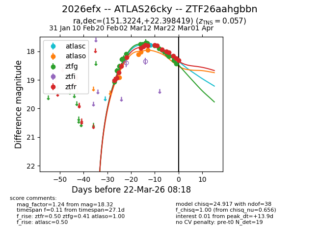
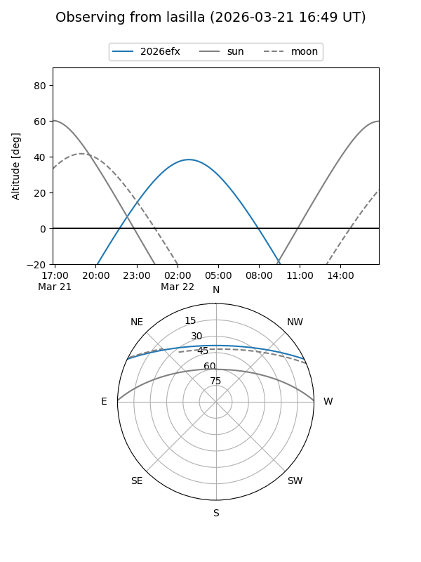
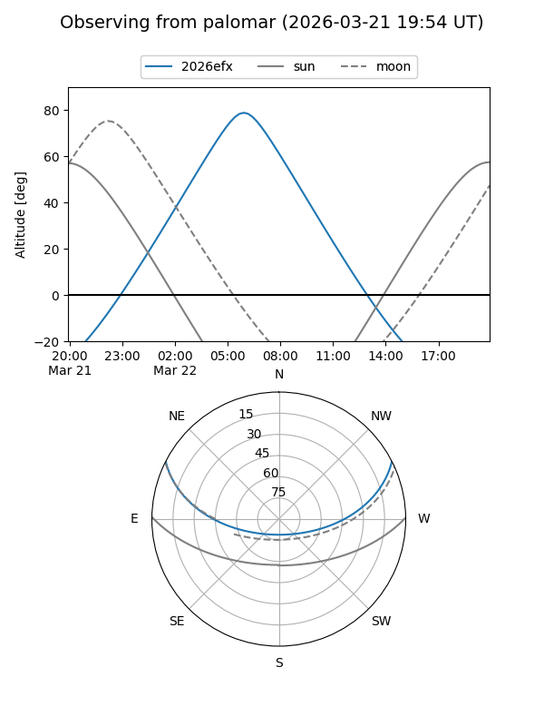
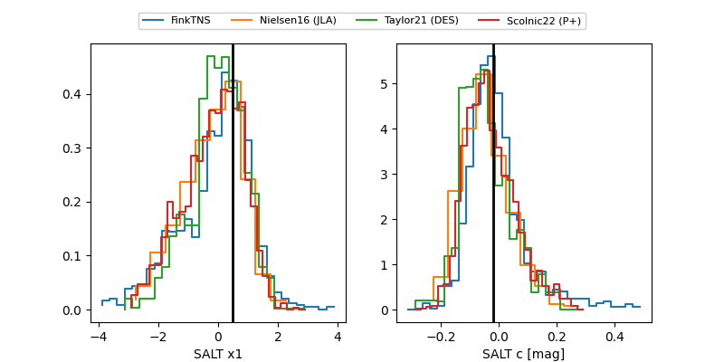

2026efx
Target 2026efx at 2026-03-22 08:20
Aliases and brokers:
FINK: link
Lasair: link
ALeRCE: link
TNS: link
YSE: link
alt names
ZTF26aahgbbn (ztf,fink_ztf)
2026efx (tns,yse)
ATLAS26cky (atlas)
Coordinates:
equatorial (ra, dec) = 151.3224,+22.39842
equatorial (HMS+DMS) = 10:05:17.39,+22:23:54.31
galactic (l, b) = (210.7313,+52.15484)
Flags:
confirmed ia
Photometry:
last atlasc=17.79, atlaso=17.96, ztfg=18.44, ztfr=18.32
1 atlasc, 4 atlaso, 18 ztfg, 17 ztfr detections
Lightcurve

Visibility


Additional plots
